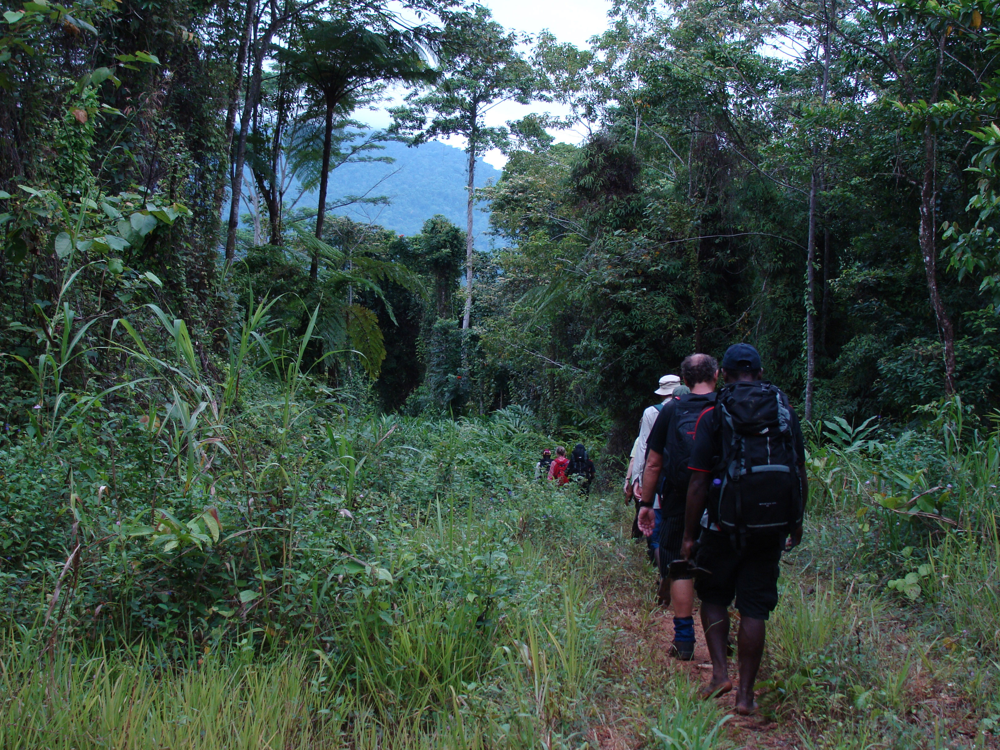
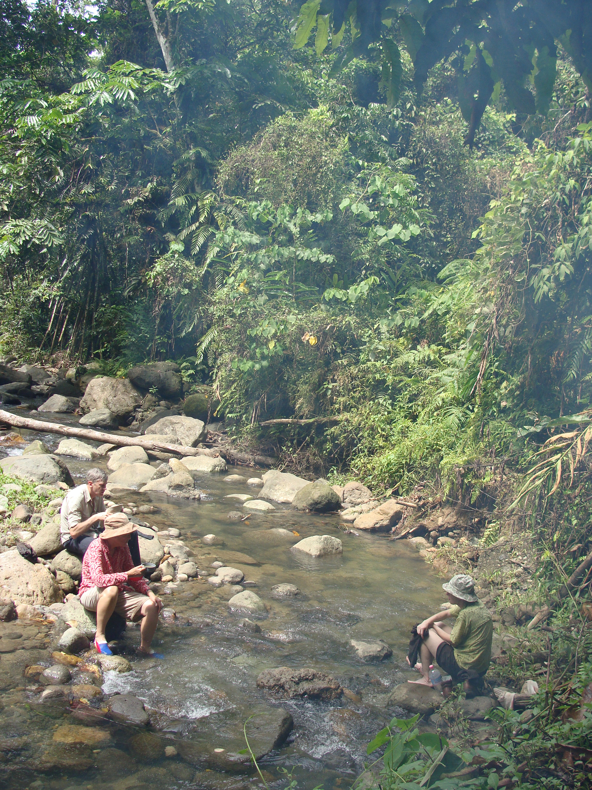

In the dense rainforest of East New Britain, a trail winds through history. The Lark Force Wilderness Track follows the route taken by Australian soldiers in January 1942, when Japanese forces invaded Rabaul and the small Australian garrison—known as Lark Force—was forced to flee through the jungle. Today, this challenging trek offers adventurers a unique combination of World War II history, volcanic landscapes, and pristine wilderness that few visitors to Papua New Guinea ever experience.
As a guide who has walked this trail countless times, I can tell you that the Lark Force Track is more than just a hike. It's a journey into a pivotal moment in our region's history, a physical challenge through some of the most spectacular terrain in East New Britain, and a tribute to the soldiers who made this desperate escape more than eighty years ago. From the rumbling presence of Mt Tavurvur to the hidden Japanese tunnels that dot the landscape, every step of this trail tells a story.
The Lark Force Wilderness Track
A 4-day trek through East New Britain's rainforest, past active volcanoes, WWII tunnels, and historic battle sites.
The History of Lark Force
In early 1942, the Australian garrison at Rabaul—approximately 1,400 soldiers known as Lark Force—found themselves hopelessly outnumbered when Japanese forces invaded on January 23. Rather than surrender, many soldiers attempted to escape across the rugged Gazelle Peninsula to the south coast, where they hoped to be evacuated by sea.
What followed was a desperate journey through some of the most difficult terrain in the Pacific. The soldiers navigated dense jungle, crossed raging rivers, and climbed volcanic ridges, all while evading Japanese patrols. Some made it to safety. Others were captured, and many of those perished in the sinking of the Montevideo Maru—Australia's worst maritime disaster.
The trail these soldiers took—now known as the Lark Force Wilderness Track—has been preserved and reopened for trekkers who want to understand the courage and determination of those who walked it. Walking this trail is a profound historical experience, one that connects you directly with a defining moment in the Pacific War.
The Trek: What to Expect

The Lark Force Wilderness Track is a challenging 4-day trek covering approximately 40 kilometers across the Gazelle Peninsula. The trail traverses some of the most remote and spectacular terrain in East New Britain, from coastal lowlands to volcanic ridges, from dense rainforest to open grasslands. Here's what you can expect:
Day 1: Kokopo to Base Camp
The trek begins in Kokopo, where you'll meet your guides and receive a comprehensive briefing on the history and logistics of the trail. A vehicle transfer takes you to the trailhead at the edge of the Baining Mountains. The first day is a moderate 3-4 hour hike through secondary forest and coconut plantations, introducing you to the terrain and climate. You'll camp at a designated base camp with basic facilities, where your guides prepare a hot meal and brief you on the days ahead.
Day 2: Into the Wilderness
The second day is the most challenging, with a steep ascent into the heart of the Gazelle Peninsula's rainforest. You'll climb to elevations of over 800 meters, passing through towering primary forest with giant trees, strangler figs, and dense undergrowth. Along the way, your guide will point out remnants of the wartime escape—rusted equipment, old camp sites, and the occasional Japanese tunnel or defensive position. The day ends at a ridge-top camp with spectacular views of the surrounding volcanoes, including Mt Tavurvur and the other peaks of the Rabaul caldera.
Day 3: Volcano Views and Japanese Tunnels
This day takes you along the volcanic ridges that form the backbone of the Gazelle Peninsula. The trail offers breathtaking views of the active volcanoes that define East New Britain's landscape, including Mt Tavurvur, Mt Vulcan, and the other peaks of the caldera. You'll visit several Japanese tunnel complexes hidden in the hills—remnants of the occupation that followed Lark Force's escape. These tunnels, carved by hand, served as command posts, hospitals, and ammunition storage. Your guide will explain their history and significance. The day ends at a camp near a freshwater stream, where you can swim and wash before dinner.
Day 4: Descent to the Coast
The final day is a steady descent through hill forests and coastal plains to the south coast. You'll emerge from the jungle near the village of Warangoi, where a vehicle will be waiting to transfer you back to Kokopo. The sense of accomplishment is profound—you've walked the same route as the Lark Force soldiers, experienced the same landscape, and gained a deeper understanding of their ordeal.
Landmarks Along the Trail

Mt Tavurvur and the Rabaul Caldera
Throughout the trek, you'll have spectacular views of the Rabaul caldera and its active volcanoes. Mt Tavurvur, which famously erupted in 1994 and continues to emit steam and ash today, is a constant presence on the northern horizon. The sight of this active volcano from the trail is a powerful reminder of the dynamic forces that shape this landscape—and a striking contrast to the history of human conflict that unfolded here.
Japanese Tunnel Complexes
Hidden in the hills along the trail are numerous Japanese tunnel complexes, remnants of the occupation that followed the invasion. These tunnels served various purposes—command posts, communication centers, hospitals, and ammunition storage. Some are extensive, with multiple chambers and passageways; others are smaller, hastily carved defensive positions. Your guide will take you to several of these sites, explaining their history and the role they played in the Japanese defense of Rabaul.
Lark Force Memorial Sites
Along the trail, you'll visit sites where Lark Force soldiers camped, fought, or were captured. Your guide will share the stories of individual soldiers—their backgrounds, their experiences, and their fates. These personal stories bring the history to life, transforming the landscape from a simple wilderness into a memorial to those who walked it before.
Baining Mountains
The trail passes through the foothills of the Baining Mountains, home to the Baining people and their famous fire dance tradition. While you won't visit villages on the trek, the landscape is part of their traditional territory, and your guides will share insights into the culture and history of this region.
Volcanic Hot Springs
Along the lower sections of the trail, you'll pass near volcanic hot springs—a reminder of the geothermal activity that characterizes East New Britain. Depending on the route, you may have the opportunity to soak in these natural hot pools, a welcome relief after a day of trekking.
Planning Your Lark Force Trek
Best Time to Trek
The dry season (May through October) offers the most favorable conditions for trekking the Lark Force Track. During these months, trails are drier, river crossings are safer, and the weather is generally stable. September and October are particularly ideal, with cooler temperatures and clear skies that offer the best views of the volcanoes.
Fitness and Preparation
The Lark Force Wilderness Track is rated as challenging. Trekkers should be in excellent physical condition, with good cardiovascular fitness and experience with multi-day hiking. The terrain is rugged, with steep ascents and descents, and the tropical climate means high humidity and temperatures. We recommend:
- Regular cardio training (hiking, running, cycling) for at least 3 months before your trek
- Practice hikes with a loaded pack (8-10 kg)
- Experience with wet and muddy conditions—the trail can be slippery after rain
- Consult your doctor before booking, especially if you have any medical conditions
What to Bring
- Sturdy, broken-in hiking boots – Essential for the rugged terrain
- Lightweight, quick-drying clothing – Cotton should be avoided; synthetic or wool is best
- Rain jacket and pants – Rain is possible even in the dry season
- Warm layer – Evenings at higher elevations can be cool
- Day pack (30-40 liters) – For carrying your personal gear
- Water bottles or hydration system (3+ liters capacity) – Staying hydrated is essential
- Headlamp with extra batteries – For early morning starts and evening camp activities
- Insect repellent – Mosquitoes can be present, especially in lowland areas
- Sunscreen and sun hat – The tropical sun is intense, even in the forest
- Camera – To capture the landscapes and historical sites
- Personal medications and first aid kit – Your guide carries a comprehensive kit, but bring personal items
Why Book Your Lark Force Trek With Bismark Touris?
We are East New Britain's premier trekking operator, with years of experience guiding the Lark Force Wilderness Track. Our comprehensive packages include:
- Expert local guides – Our guides have walked this trail hundreds of times and know its history intimately
- All equipment – Tents, sleeping mats, cooking gear, and group equipment provided
- Porters – Our porter team carries group equipment and supplies, allowing you to focus on the experience
- Quality meals – Nutritious, high-energy food prepared fresh on the trail
- Historical interpretation – Detailed information about Lark Force, the Japanese occupation, and the wartime history of East New Britain
- Vehicle transfers – All transfers between Kokopo and the trailhead included
- Emergency communications – Satellite phone and first-aid certified guides
- Volcano viewing – The trail offers some of the best views of Mt Tavurvur and the Rabaul caldera
Conservation and Cultural Respect
The Lark Force Wilderness Track passes through land that is traditionally owned by the Baining people and other local communities. Our tours operate in partnership with these communities, ensuring that trekking benefits the people who call this region home. We pay traditional landowners for access, employ local guides and porters, and practice Leave No Trace principles on the trail.
When you trek with us, you're supporting the preservation of both the natural environment and the historical legacy of the Lark Force soldiers. Your visit helps ensure that this important trail remains open and that the stories of those who walked it are not forgotten.
Combining Your Trek with Other East New Britain Experiences
The Lark Force Wilderness Track is just one of the extraordinary experiences available in East New Britain. Many trekkers choose to combine their adventure with:
- Mt Tavurvur Volcano Hike – After completing the trek, climb to the rim of this active volcano for a completely different perspective on the landscape you've just traversed.
- Japanese Tunnel Tours – In addition to the tunnels on the trail, the Rabaul area has extensive tunnel systems that can be explored in a guided tour.
- Bitapaka War Cemetery – Pay respects at the beautifully maintained Commonwealth War Graves cemetery, where many of the soldiers who served in East New Britain are buried.
- Rabaul Volcanological Observatory – Learn about the volcanoes that dominate the landscape and the science of eruption prediction.
- Tolai Cultural Experiences – Visit a traditional Tolai village and learn about the culture of the people who have lived in the shadow of these volcanoes for centuries.
Frequently Asked Questions
How difficult is the Lark Force Wilderness Track?
The track is rated as challenging. It requires good fitness, experience with multi-day trekking, and the ability to navigate steep, sometimes slippery terrain. The reward is an extraordinary journey through history and wilderness.
Do I need previous trekking experience?
Previous multi-day trekking experience is strongly recommended. You should be comfortable with steep ascents and descents, and with hiking in hot, humid conditions. We're happy to discuss your experience level when booking.
What is the accommodation like on the trail?
You'll stay in comfortable tented camps with sleeping mats and warm meals prepared by our guides. The camps are located at designated sites with access to fresh water. This is a wilderness experience—you'll be sleeping in the rainforest, but with all the essentials provided.
Are there river crossings?
Yes, depending on the season and recent rainfall, there may be river crossings. Your guides will assess conditions and ensure safe crossing. Water levels are generally lower during the dry season (May-October).
What is the cost of the Lark Force Wilderness Track trek?
Prices vary based on group size and whether you combine the trek with other experiences. A 4-day/3-night Lark Force trek typically starts from PGK 1,800 per person (based on 4 people sharing). Contact us for a personalized quote.
Book Your Lark Force Wilderness Track Adventure
Limited departures available. Early booking is essential to secure guide availability for this historic trek.
Phone: +675 76769513
WhatsApp: +675 76769513
Email: info@bismarktouris.com
Book by June 2026 to secure the best guide availability for the dry season!
Adolf Pidik is a senior guide with Bismark Touris, specializing in trekking and historical tours across East New Britain. A descendant of families who witnessed the 1942 invasion, he has been guiding the Lark Force Wilderness Track for over 15 years and is passionate about preserving and sharing this important history.